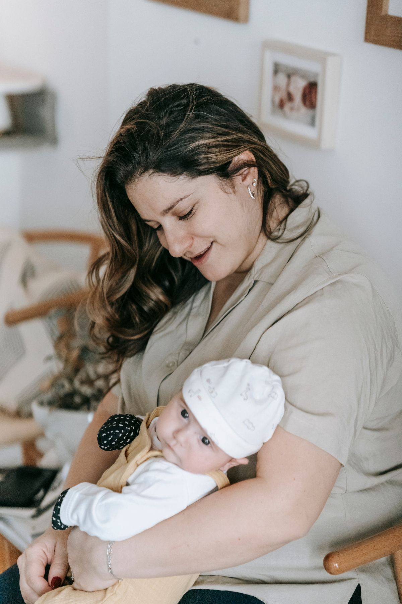
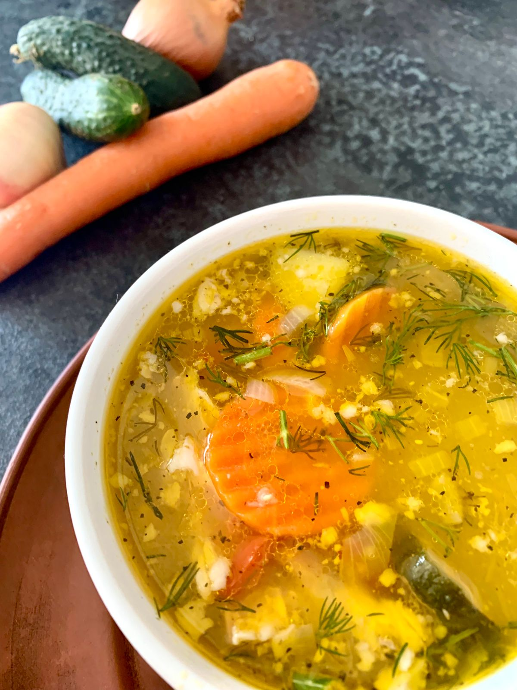

持证护理 · 专属匹配 · 全程保障
妈妈安心休养，宝宝得到专业照护
告诉我们您和宝宝的情况，AI会综合护理需求、服务经验与上门距离，为您推荐更合适的兰州本地护理师。
兰州本地 · 专业母婴护理到家

告诉我们您和宝宝的情况，AI会综合护理需求、服务经验与上门距离，为您推荐更合适的兰州本地护理师。
需求采集
AI匹配
签约托管
服务监管
AI与可穿戴设备只做记录、趋势提示和预警，不诊断；医疗护理操作由具备相应法定资质的人员负责。
平台保障中心
保障设计参考国家卫生健康委“互联网+护理服务”关于资质、评估、定位留痕、风险预案与保险配置的要求。
如呼吸困难、抽搐、意识异常、持续大量出血等，优先拨打120或前往急诊，平台同步留痕。平台与AI不替代急救。
指标异常、喂养明显减少、伤口异常等进入护士复核与转诊建议流程，不在线作诊断。
迟到、缺项、服务态度或费用争议生成工单，关联订单、日志和双方确认记录。
AI仅用于信息整理、匹配辅助和风险提示，不进行疾病诊断、不开具处方、不替代医生。所有护理操作须由符合资质且胜任该项目的护士执行。
本页为产品原型的保障机制说明，实际服务范围、保险责任和处置时效以正式合同、保单及当地监管要求为准。医护背景母婴护理师库
把护士背景与月子照护、营养餐、家政规范等能力拆开考核，按等级、专项和履约质量透明展示。
✓法定资质核验护士执业注册与专业经历独立展示
✓月子专项考核产褥护理、新生儿、营养与家务实操
✓平台等级认证P0至M4分层，证书编号与有效期透明
✓持续质量管理日志、评价、异常、年审与降级联动
AI需求采集
我会综合产后恢复、新生儿风险、月子餐需求、家庭事务边界、智能监测和服务偏好，计算护理师推荐权重。
以下信息仅用于平台内部匹配、服务监管和风险预警，不替代医生诊断。出现红旗症状需及时就医。
智能匹配结果
已提高“早产儿护理、剖宫产恢复、含餐认证、IoT数据记录、夜间稳定性、本地距离”权重。
护理师详情
三甲产科6年 · 早产儿护理 / 剖宫产恢复
近期可约 · 平均15分钟响应平台展示基于已核验的资质材料与历史履约记录，具体可承接项目仍需结合家庭风险评估和护士当期排班确认。
签约支付
含产妇三餐两点的制作与厨房收尾；食材、特殊膳食和其他家庭成员餐食需在合同中另行确认。

每日8小时 · 城关区 · 张雨婷护理师
合同逐项固化照护范围、餐饮边界、设备授权、责任主体和禁做事项；电子合同、托管结算、过程日志与异常工单全量关联。
服务监管
护理日志、体温记录、喂养记录与满意度确认。
09:00 护士上门签到，位置与合同地址一致
10:30 新生儿喂养记录已上传
14:00 产妇恢复观察待确认
设备数据仅供趋势观察。点击查看数据来源、预警分级与护理师复核记录。
平台认证中心
分别验证“能否依法开展相关工作”和“是否胜任具体居家服务”，避免仅凭护士身份推定月嫂能力。
适配早产儿出院后日常照护、剖宫产恢复、复杂喂养与含餐服务；高风险场景仍须遵守转诊和专业边界。
示例门槛：理论与实操均≥85分、同类服务≥100单、近180天评分≥4.7、无未闭环重大异常。1材料审核身份、资质、经历
2基线测评识别能力缺口
3分层培训理论与示教
4实操考核OSCE情景站
5带教服务见习不可独立接单
6发证公示编号、等级、有效期
7动态年审晋级、复训、暂停或退出
“P0-M4”为本平台内部能力等级，不是国家职业资格或专业技术资格。护理、医疗相关操作须同时满足适用法律法规、执业注册、服务机构与具体项目要求。
IoT智能照护
产妇手环、智能体温计、婴儿体重与喂养记录统一归档，支持趋势识别和分级处置。
系统已结合连续3小时趋势触发关注提醒，并排除单次佩戴松动。护理师将在15分钟内电话确认症状与测量条件。
消费级穿戴设备数据不能用于诊断或替代医用测量。涉及医疗用途的设备须核验医疗器械注册/备案信息；出现胸痛、呼吸困难、抽搐、意识异常或大量出血等情况，应立即呼叫120。
母婴护理成长学院
围绕月子餐、产褥专项、家政服务、家庭沟通与兰州本地实务建立分层课程；面向平台入驻人员与社会从业者开放。
32学时理论 + 24学时实操 + 3次情景考核，覆盖产褥生活护理、新生儿日常照护、家庭服务边界和履约记录。
营养评估、菜单编排、食品安全、常见烹调、控糖与过敏沟通；通过后可展示“含餐服务认证”。
母婴区域清洁消毒、衣物与用品管理、交叉污染预防、家庭事务边界与冲突沟通。
四区通勤与排班、家庭饮食沟通、方言场景、干燥季居家环境记录和本地服务资源协同。
课程结业证和平台能力等级为培训与内部评价证明，不得包装为国家职业资格。正式招生须公示举办主体、师资、课时、考核、退费和证书性质。
兰州地域特色服务
综合护理师常驻区域、通勤稳定性、家庭饮食习惯、沟通方式与居家环境需求进行地域化匹配。
常驻区域、通勤方式、可服务班次和本地学习/工作经历可核验。
尊重西北饮食习惯，同时以营养、过敏信息和食品安全为边界。
按家庭授权记录温湿度、通风与母婴区域清洁，不作疾病判断。
普通话/方言偏好、长辈参与和就医交通信息在服务前确认。
平台只做家庭口味与本地食材适配，不宣传“催乳、排毒、治疗”等功效。护理师依据已确认的过敏、控糖、医嘱和服务合同制作菜单。
区域人数、距离和响应时间均为原型演示数据。正式运营应基于护理师实时定位授权、交通状况与排班计算，不因地域、语言或饮食偏好降低资质和专业能力门槛。
护理师端
护士执业注册已复核 · 平台认证有效至2027-05
剖宫产恢复 + 早产儿照护 + 含餐服务 + IoT记录，城关区4.2km，家庭偏好兰州方言沟通，预计26天。
平台后台
黄疸指标连续升高，等待客服复核；疑似线下交易沟通，进入风控审核。
护理日志、IoT预警、餐饮履约、评价、异常与回访进入质量画像，既优化匹配权重，也定位复训课程和认证降级条件。